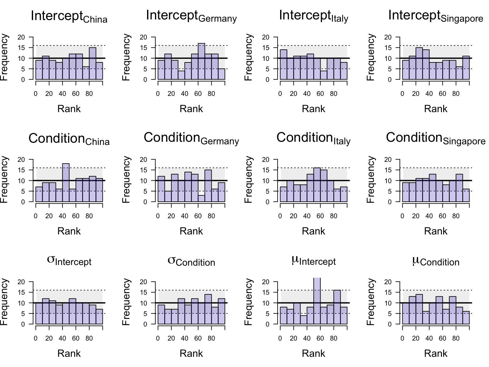
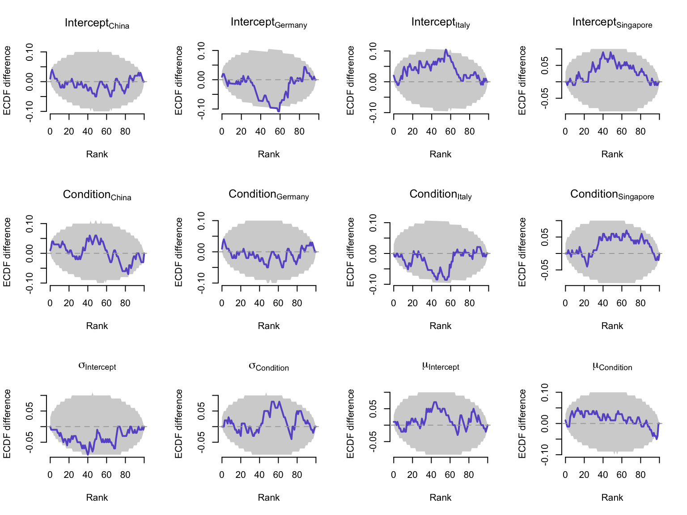

Disclaimer: This is a draft version of the tutorial. Please let me know about any mistakes (and excuse any typos).
We have already seen various methods to assess the appropriateness of our priors and posteriors, by means of prior/posterior predictive checks. Another method for validating the appropriateness of Bayesian models is based on assessing the faithfulness of the computational model, i.e., whether the model can recover the parameters that were used to generate the data. This is often referred to as simulation-based calibration (SBC) (Talts et al. 2018). Here, we follow the Bayesian workflow proposed in Kucharský et al. (2021), based on the recommendations by Talts et al. (2018) and Schad, Betancourt, and Vasishth (2021).
A full workflow for robust Bayesian inference focuses on the following steps:
assessing adequacy of priors (prior predictive checks): do the priors lead to reasonable predictions?
assessing computational faithfulness (through simulation-based calibration): can the model recover the parameters that were used to generate the data?
assessing model sensitivity: can the model return unbiased estimates and effectively update prior beliefs (i.e., can the model learn from data)?
assessing adequacy of posteriors: posterior predictive checks: do the posterior estimates reflect reasonable predictions?
In practice this involves:
Take the prior \(\pi(\theta)\) and randomly draw a parameter set \(\tilde{\theta}\) from it: \(\tilde{\theta} \sim \pi(\theta)\)
Use this parameter set \(\tilde{\theta}\) to simulate hypothetical data \(\tilde{y}\) from the model: \(\tilde{y} \sim \pi(y|\tilde{\theta})\)
Fit the model to this hypothetical data and draw samples from the posterior distribution: \(\tilde{\theta'} \sim \pi(\theta|\tilde{y})\)
Find the rank of the true parameter \(\theta\) within the posterior samples \(\tilde{\theta'}\) (that is, the count of posterior samples smaller than the generating parameter value).
Repeat steps 1-4, say, 100 times
Assess faithfulness of the model by comparing the posterior estimates to the prior draws that were used to generate the data
Assess model sensitivity by comparing the posterior estimates to the prior estimates (i.e., is the model unbiased and can it effectively update prior beliefs?)
Fit the model to the actual data
Assess the adequacy of the posterior estimates and predictions
Example: afterlife beliefs and mind-body dualism
To show SBC in action, we’ll apply it to estimating a multilevel model on cross-cultural variation in afterlife beliefs and mind-body dualism, using a subset of the data from Hoogeveen et al. (2023). The idea that high-level mental processes (e.g., love) continue after physical death, whereas bodily processes (e.g., hunger) cease. The original data consists of 10195 subjects from 24 countries, who each provided 6 continuation ratings (i.e., 61170 observations). Specifically, responses were tabulated as x out of 3 ‘yes, continues’ responses in the body-condition (hunger, working brains, hearing) and x out of 3 ‘yes, continues’ responses in the mind-condition (love, knowledge, desire). In the example here, we use a subset of the data with \(60\) subjects across \(10\) countries.
1. Prior predictive checks
To ensure that the model makes predictions are accordance with theoretical expectations we create prior predictive plots. Because we’re working with a (aggregated) binomial model (i.e., ‘yes’ vs. ‘no’ responses, across 3 trials per category), we need to be especially careful about the prior settings. That is, because the priors are set on the transformed scale (logit-transformation), we need to check what the prior settings translate into on the probability scale. We can investigate prior predictions (on the response scale) before we touch the actual data. In this case, we have to specify priors on the intercept (i.e., overall probability of saying ‘continues’), the experimental effect (i.e., difference in probability of saying ‘continues’ between mental and physical states), and the between-country variation.
Show the code
# the data is a subset of the full cross-cultural dataset on afterlife beliefs# and mind-body dualism dat <-read.csv("afterlife_beliefs.csv")head(dat)
country subject resp cat condition site
1 Belgium 468 2 -0.5 body 1
2 Belgium 468 3 0.5 mind 1
3 Belgium 473 1 -0.5 body 1
4 Belgium 473 3 0.5 mind 1
5 Belgium 475 2 -0.5 body 1
6 Belgium 475 2 0.5 mind 1
Here, we use informative priors to reflect the knowledge we have from previous studies:
overall average continuity is 0.2, from 0.05 to 0.42 (across different studies). Note that this is about the difference in means across studies, not across countries. We don’t know much about the difference between countries, but we do know that the overall intercept is around 0.2, with a range from 0.05 to 0.42.
we can translate this to the logit-scale. The mean will be \(log(p / (1 - p))\), so \(log(0.2 / (1 - 0.2)) = -1.39\)
the minimum value is \(log(0.05 / (1 - 0.05)) = -2.94\) and the maximum is \(log(0.42 / (1 - 0.42)) = -0.32\). From that we can get an approximate standard deviation of \(sd = (max - min) / 4 = 0.66\). We thus predict a distribution that puts more density on the lower values of 0/3, 1/3, 2/3 and 3/3 responses.
state condition effect: We know that in previous studies, the average continuity was around 20%, with a different between mental and bodily states of around 15%. This means an expected difference of around 0.98 on the logit-scale. We also allow for some uncertainty, specifically, the observed range from 0.01 to 0.58 in the state-effect, which means a standard deviation of about 0.43 on the logit-scale (again we don’t know much about between-country differences).
The prior predictions visualized in Figure 1 confirm these expectations. The top panel shows the prior predictive distribution of all responses. The bottom panels show that the distribution in the body condition predicts less continuity than the mind condition, which is in line with our prior information from previous literature.
Figure 1: Prior model predictions of data featuring 60 subjects across 10 countries. Before having been in contact with the data, the model predicts slightly more lower values of 0/3, 1/3, 2/3 or 3/3 continuity responses (top panel) and more continuity in the mind compared to the body condition (bottom panels).
2. Computational faithfulness
The idea of the computational faithfulness check is to see if the implemented sampling algorithm is able to recover the parameters that the data was simulated from. This is done by simulating data from the prior distribution, and then fitting the model to this simulated data. The MCMC algorithm should be able to recover the prior distribution accurately, which can be assessed by comparing the posterior samples to the prior draws that were used to generate the data.
Here, we generated \(100\) datasets from the prior distribution using predictive predictives. We then fitted the model to each of these datasets. To validate the computational faithfulness of the model, we then compared for each simulated dataset, the initial parameter value drawn from the prior (i.e., the draw that generated the data) to the samples from the posterior. This involved tallying the number of posterior samples which are smaller than the prior draw. When the model is computational faithful, it should be able to recover the prior distribution accurately. Specifically, all ranks –that is, the count of posterior samples smaller than the generating parameter value– should be equally probable, resulting in an approximately uniform distribution of rank statistics. Figure 2 depicts the results from the simulation based calibration for the fixed effect parameters and a random subset of country-level parameters (random effects) and confirm the approximately uniform distribution. These results shows that the MCMC algorithm faithfully recovers the prior distribution.
Note that for the simulation-based calibration, we do need to thin the chains, because we need the draws from the posterior to be roughly independent in order to get an accurate estimate of the rank statistic.
# run the simulation study (this takes a while, even for this simple model)# you only have to run this one though# the output files are also included in the github repository, so you can # download those and inspect the results directly.dataset <- datfor(n in1:nsims){# add responses from prior predictives to the data dataset$resp <-as.numeric(pred_responses[nsims_ready + n,])# fit the model on the simulated data fit_post <-brm(data = dataset, family = binomial, resp |trials(3) ~1+ cat + (1+ cat | site),c(prior(normal(-1.39, 0.65), class = Intercept),prior(normal(0.98,0.42), class = b),prior(normal(0.5,0.2), class = sd),prior(lkj(2), class = L)),iter = iterations, warmup = warmup, chains =4, cores =4,seed =2025, backend ="cmdstanr")# get posterior samples sbc_post <- posterior::as_draws_df(fit_post) sbc_post <- sbc_post[, 1:(which(colnames(sbc_post) =='lprior')-1)] par_names_post <-colnames(sbc_post) par_names_prior <-colnames(sbc_prior)# compute the posterior medians and variances mu_post <-apply(sbc_post, 2, mean) var_post <-apply(sbc_post, 2, var) # compute the 50% and 80% credible intervals ci_post <-apply(sbc_post, 2, function(x) quantile(x, c(0.1, 0.9, 0.25, 0.75)))# thin the chains sbc_post <- sbc_post[seq(from=1, to=nrow(sbc_post), by =100),] rank <-data.frame(matrix(nrow =1, ncol =ncol(sbc_post)))colnames(rank) <- par_names_post# loop over parametersfor (j in1:length(par_names_post)) {# count the posterior samples that are smaller than the draw from the prior rank[, j] <-sum(sbc_post[, par_names_post[j]] < sbc_prior[nsims_ready + n, par_names_prior[j]]) }# export resultswrite.csv(mu_post, paste0(output_file, 'sim_mu_post_', nsims_ready + n, '.csv'), row.names =FALSE)write.csv(var_post, paste0(output_file, 'sim_var_post_', nsims_ready + n, '.csv'), row.names =FALSE)write.csv(ci_post, paste0(output_file, 'sim_ci_post_', nsims_ready + n, '.csv'), row.names =FALSE)write.csv(rank, paste0(output_file, 'sim_rank_', nsims_ready + n, '.csv'), row.names =FALSE)rm(fit_post)}
# select the parameters to plot (fixed effects of intercept and condition, # plus a random subset of 3 random effects (country-level))nfix <-sum(grepl('^b_|^sd_', colnames(sbc_prior)))nran <-sum(grepl('^r_site', colnames(sbc_prior)))/2countries <-unique(dat$country)all <-FALSEif(all){ par_vector <-1:npars param_labels <- par_names_post} else { ran_index <-sort(sample(1:nran, 4))# four random intercepts and condition effects intercepts <-paste0('r_site.', ran_index, '.Intercept.') effects <-paste0('r_site.', ran_index, '.cat') fixed <-colnames(sbc_prior)[1:nfix] names <-c(fixed, intercepts, effects) par_vector <-NULLfor(n in1:length(names)){ new_index <-grep(names[n], colnames(sbc_prior)) par_vector <-c(par_vector, new_index) }# gives nice labels for plotting param_labels <-c(bquote('Intercept'[.(countries[ran_index[1]])]),bquote('Intercept'[.(countries[ran_index[2]])]),bquote('Intercept'[.(countries[ran_index[3]])]),bquote('Intercept'[.(countries[ran_index[4]])]),bquote('Condition'[.(countries[ran_index[1]])]),bquote('Condition'[.(countries[ran_index[2]])]),bquote('Condition'[.(countries[ran_index[3]])]),bquote('Condition'[.(countries[ran_index[4]])]),expression(sigma['Intercept']),expression(sigma['Condition']),expression(mu['Intercept']),expression(mu['Condition']))}
Show the code
transparentColor <-function(color, percent =50, name =NULL) { rgb.val <- grDevices::col2rgb(color)## Make new color using input color as base and alpha set by transparency t.col <-rgb(rgb.val[1], rgb.val[2], rgb.val[3],max =255,alpha = (100- percent) *255/100,names = name)invisible(t.col)}band_color <-transparentColor(color ="grey36", percent =90, name ='colpost')hist_color <-transparentColor(color ="slateblue", percent =70, name ='colpost')# plot the historgramspar(mfrow=c(3, 4))# grey bandnr_simulations <- nsims_ready# nr_samples_post_for_every_prior_sampleL <-100# equivalent to highest number of ranknr_of_bins <-10# equals ideal number of samples per bin# how_many_sims_in_how_many_binsthinning <- nr_simulations/nr_of_bins# for the code laterbreaks <- L/nr_of_binslow <-qbinom(0.025, nr_simulations, thinning/nr_simulations)mid <-qbinom(0.5, nr_simulations, thinning/nr_simulations)high <-qbinom(0.975, nr_simulations, thinning/nr_simulations)x <-seq(from =1, to = L)for(j inseq_along(par_vector)){ hist_param <-hist(rank[, par_vector[j]], breaks = nr_of_bins, plot=FALSE)plot(1, type='n',las =1, main = param_labels[j], xlab ='Rank', ylab ='Frequency',bty='n', cex.lab=1.5, cex.main=2,xlim =c(0, 100),ylim =c(0, high +5) ) polygon(c(x, rev(x)), rep(c(high, low), each = L), col = band_color, border =NA)abline(h=c(mid, high, low), lwd =c(2, 1, 1), lty=c(1, 3, 3))plot(hist_param, col = hist_color, add =TRUE) # Add 2nd histogram using different color}

Figure 2: Histograms of the rank statistic for simulated data featuring 10 countries and 60 subjects per country. The grey band represents the expected distribution of ranks assuming a uniform distribution. The rank statistic for each parameter is approximately uniformly distributed which indicates a good recovery of the prior distribution.
A downside of the rank histogram is that the interpretation depends on the width of the bins. A more informative way to visualize the rank statistics is to plot the empirical cumulative distribution function (ECDF) of the ranks, and more specifically, the difference between the perfectly uniform CDF and the empirical CDF of the ranks, including the 95% interval of expected deviations. As shown in Figure 3, for all parameters, the ECDF of the ranks is approximately uniform (i.e., it stays within the band), which indicates that the model is computationally faithful, that is, unbiased with the appropriate level of certainty.
Show the code
plot_sbc_ecdf_diff <-function(ranks, n_rep =10000, conf_level =0.95, main ="ECDF difference") { ranks <-sort(ranks) n_samples <-length(ranks) xvals <-0:max(ranks)# Empirical ECDF ecdf_vals <-ecdf(ranks)(xvals)# Theoretical uniform ECDF uniform_ecdf <- xvals /max(xvals)# Simulate ECDFs under uniform null sim_ecdfs <-t(replicate(n_rep, ecdf(sample(xvals, size = n_samples, replace =TRUE))(xvals))) sim_diff <-sweep(sim_ecdfs, 2, uniform_ecdf, "-")# Compute confidence bands for the difference lower <-apply(sim_diff, 2, quantile, probs = (1- conf_level) /2) upper <-apply(sim_diff, 2, quantile, probs =1- (1- conf_level) /2)# Compute difference between observed ECDF and uniform observed_diff <- ecdf_vals - uniform_ecdf# plotplot(xvals, observed_diff, type ="n", bty ="n",ylim =range(c(observed_diff, lower, upper)),xlab ="Rank", ylab ="ECDF difference", main = main)# Confidence bandpolygon(c(xvals, rev(xvals)), c(upper, rev(lower)), col ="lightgray", border =NA)# Plot observed ECDF differencelines(xvals, observed_diff, lwd =2, col ="slateblue")# Reference line: zero differenceabline(h =0, lty =2, col ="darkgray")}# plot ECDF for selected parameterspar(mfrow=c(3, 4))for(j inseq_along(par_vector)){plot_sbc_ecdf_diff(rank[,j], main = param_labels[j])}

Figure 3: Empirical cumulative distribution function (ECDF) of the ranks of the simulated data. The grey band represents the expected distribution of ranks assuming a uniform distribution. The ECDF of the ranks is approximately uniform which indicates a good recovery of the prior distribution.
These plots are not only useful to detect if the model is well-calibrated or not, but they can also provide insight into the type of misspecification. See the lecture slides for examples of different shapes and what they signal about issues in the model.
3. Model sensitivity
Next we assess model sensitivity to confirm that (1) the implemented MCMC algorithm returns unbiased estimates and that (2) the data effectively update the prior beliefs (i.e., the likelihood should reduce the prior uncertainty yielding a lower posterior variance). For that, we depict the posterior z-scores of each parameter as a function of the posterior contraction for all simulated datasets. Ideally, posterior z-scores cluster around zero, indicating minimal overfitting to incorrect values and no prior/likelihood mismatch. Posterior contraction scores ideally concentrate around 1 indicating effective updating from prior to posterior. Figure 4 plots the posterior z-score as a function of the posterior contraction for all group level parameters in the model as well as a random subset of parameters on the individual level. The outcomes of our simulations reveal favorable posterior z-scores, predominantly clustering around zero. The outcomes of the posterior contraction are also good, with many values close to one. Note that the level of posterior contraction also depends on the sample size; in small samples, less updating is expected.
Figure 4: Assessment of model sensitivity. The grey dots depict the means of the distributions. Z-scores (y-axis) clustering around zero indicate that the model returns unbiased estimates. Posterior contraction (x-axis) ranges from around 0.5 to 1, which indicates satisfactory to good updating of model parameters.
In addition to assessing model sensitivity, we can also depict the relationship between the generating parameter values and the posterior estimates to evaluate the model’s ability to recover true parameter values. A perfect recovery of the true parameter values would result in a correlation of 1. Our results, shown in Figure 5, show correlations between \(0.73\) to \(0.97\) across population- and country-level parameters which again indicates good recovery.
Figure 5: True versus estimated parameter values. Correlations between true values (x-axis) and estimated parameter values (y-axis) range between \(0.73\) to \(0.97\) which indicates good recovery of the model parameters.
4. Posterior predictions
The posterior predictive distribution can be interpreted as the model’s attempt to re-describe the behavioral data. Predictions from an adequate model should resemble the behavioral data. As seen before, the aggregated binomial model is not a perfect fit for these data, as it doesn’t capture the inflation of 0/3 and 3/3 well. Figure 6 shows that the misfit is especially present in the mind condition, where the model predicts many 1/3 and 2/3 responses, while the data show a enhanced preference for 0/3 and 3/3 responses. Note that the posterior average per condition is close to the observed average, so we can likely trust the model coefficients, even with this misfit in the exact pattern of the data.
In this case, we may want to consider alternative likelihood functions, such as a zero-inflated binomial model or an ordinal model, as discussed on Tuesday. Remember, however, that you sometimes need to make a trade-off between model complexity and model fit; easier models are typically easier to estimate and interpret, but might show more misfit to the exact data pattern. As a researcher you need to decide what fit is good enough, and ideally conduct sensitivity analyses on other model structures.
Figure 6: Posterior predictive distribution of the data. The model predicts responses in the body condition fairly well (bottom left), but shows clear misfit in the mind condition (bottom right), as it does not capture the inflation of 0/3 and 3/3 responses.
References
Hoogeveen, Suzanne, Sacha Altay, Theiss Bendixen, Renatas Berniūnas, Joseph A Bulbulia, Arik Cheshin, Claudio Gentili, et al. 2023. “Does She Still Love and Feel Hungry? Afterlife Beliefs, Mind-Body Dualism, and Religion Across 24 Countries.” PsyArXiv. https://doi.org/10.31234/osf.io/tvycp.
Kucharský, Šimon, N.-Han Tran, Karel Veldkamp, Maartje Raijmakers, and Ingmar Visser. 2021. “Hidden Markov Models of Evidence Accumulation in Speeded Decision Tasks.”Computational Brain & Behavior 4 (4): 416–41. https://doi.org/10.1007/s42113-021-00115-0.
Schad, Daniel J., Michael Betancourt, and Shravan Vasishth. 2021. “Toward a Principled Bayesian Workflow in Cognitive Science.”Psychological Methods 26 (1): 103–26. https://doi.org/10.1037/met0000275.
Talts, Sean, Michael Betancourt, Daniel Simpson, Aki Vehtari, and Andrew Gelman. 2018. “Validating Bayesian Inference Algorithms with Simulation-Based Calibration.” arXiv. https://doi.org/10.48550/arXiv.1804.06788.